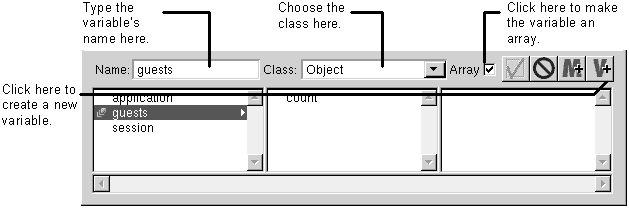

Table of Contents
Table of Contents
You can create three different types of variables: application, session, and component. Create application variables in the application window's Application tab, session variables in the application window's Session tab, and component variables in the bottom part of the component window (called the object browser). Application and session variables have a longer lifetime than component variables. For more information, see "Application, Session, and Component Variables."
To create a variable:
Click the add variable button.
Type the variable's name in the Name field and press Enter.
Choose the variable's class in the Class field.
If the variable is an array, click the Array check box.

All variables that you create in WebScript are objects. Each object is an instance of a particular class. No matter what you set the class to, the variable is declared in the script this way:
id myVar;
Setting a variable's class helps when you bind dynamic elements to it because WebObjects Builder can then determine which attributes match the variable's class.
 Next Section
Next Section